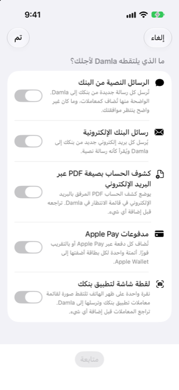

الدليل › الالتقاط التلقائي
معالج إعداد الأتمتة
الإعدادات > الأتمتة > الإعداد خطوة بخطوة.
يأخذك معالج الإعداد خطوة بخطوة لإنشاء أتمتات Shortcuts التي تُغذي Damla، نوع التقاط واحد في كل مرة، ثم ينتظر أول تنبيه حقيقي لديك ليؤكد أنها تعمل. لا يسمح iOS لتطبيق بإنشاء أتمتات، لذا تصنع كل أتمتة مرة واحدة، يدويًا، في تطبيق «الاختصارات»، ويرشدك المعالج في كل خطوة ويتحقق من النتيجة.

متى تستخدمه
- أنت تقوم بإعداد Damla وتريد أن يعمل التقاطه التلقائي، مع الخطوات الدقيقة مرتينة أمامك.
- تريد إضافة نوع التقاط آخر — رسائل البنك الإلكترونية مثلًا — وتحتاج إلى خطواته الدقيقة.
- أتمتة صنعتها يدويًا لم تعمل أبدًا، وتريد إعادتها والخطوات أمامك.
خطوة بخطوة
- افتح الإعدادات، ثم رسائل البنك وكشوف الحساب، ثم الأتمتة (الاختصارات)، واضغط الإعداد خطوة بخطوة.
- في الصفحة الأولى، ما الذي يلتقطه Damla لأجلك؟، فعّل ما تريد. لكل خيار شرح من سطر واحد تحته:
- الرسائل النصية من البنك — كل نص جديد من بنكك يُرسل إلى Damla؛ والواضح منها يُضاف كمعاملات، وغير الواضح ينتظر موافقتك. - رسائل البنك الإلكترونية — كل بريد إلكتروني جديد من بنكك يُرسل إلى Damla ويُقرأ كرسالة نصية. - كشوف الحساب بصيغة PDF عبر البريد الإلكتروني — يوضع ملف PDF المرفق بالبريد الإلكتروني في قائمة الانتظار في Damla، وتراجعه قبل إضافة أي شيء. - مدفوعات Apple Pay — كل دفعة Apple Pay أو دفعة باللمس تُضاف في الحال؛ أتمتة واحدة لكل بطاقة، للبطاقات التي أضفتها إلى Apple Wallet. - لقطة شاشة لتطبيق بنكك — ضغطة واحدة على ظهر الهاتف تلتقط لقطة شاشة لقائمة معاملات تطبيق بنكك وترسلها إلى Damla؛ وتراجع المعاملات قبل إضافة أي شيء.
- اضغط متابعة. كل نوع اخترته يحصل على صفحته الخاصة، واحدًا تلو الآخر.
- في كل صفحة، اكتب المرسل في الأعلى واضغط حفظ، عندما يحتاج النوع مرسلًا: اسم مرسل أو رقمه للرسائل النصية من البنك؛ عنوان بريد المرسل الإلكتروني (أو جزء منه) لرسائل البنك الإلكترونية وكشوف الحساب؛ آخر 4 أرقام من البطاقة لمدفوعات Apple Pay. نوع لقطة الشاشة لا يحتاج مرسلًا. يبدأ الحقل بأول مرسل محفوظ سلفًا لذلك النوع، إن وُجد.
- اقرأ الخطوات المرقمة لتطبيق «الاختصارات» في الصفحة نفسها. يمكنك تحديد نص كل خطوة ونسخه.
- اضغط فتح تطبيق «الاختصارات» واتبع الخطوات هناك. أو اضغط انسخ طلب Apple Intelligence والصق الطلب في Apple Intelligence لتطبيق «الاختصارات»، ليبنى الأتمتة عنك. يقول الزر تم النسخ بمجرد وضع الطلب في الحافظة.
- اضغط التالي للانتقال إلى النوع التالي، أو رجوع لتصحيح الذي قبله.
- الصفحة الأخيرة هي جرّبه. أرسل لنفسك اختبارًا: اجعل الأتمتة تعمل مرة واحدة، بنص حقيقي أو بريد إلكتروني أو دفعة من ذلك المرسل، أو شغّل الاختصار.
- تعرض الصفحة بانتظار أول تنبيه… حتى يصل شيئًا ما بينما أنت عليها، ثم علامة صح خضراء بما وصل إلى Damla وبالكلمات أصبحت جاهزًا. اضغط تم. لست قريبًا من بنكك؟ اضغط سأجرّبه لاحقًا وجرّب متى يناسبك.
إذا لم يصل شيء
- يقول قسم هل تعمل؟ في شاشة الأتمتة ما إذا كان شيئًا ما قد وصل إلى Damla حتى الآن، ومتى وصل آخر رسالة بنكية.
- بعد أن تُنشئ واحدة، أرسل لنفسك رسالة اختبار. إذا لم تظهر في التنبيهات الأخيرة خلال دقيقة، فالأتمتة لا تعمل: تحقق من أنها مضبوطة على التشغيل فورًا.
- الكشف أو لقطة الشاشة لا يظهران في التنبيهات الأخيرة — بل ينتظران المراجعة. يراقب المعالج تلك القائمة أيضًا، ويخبرك عندما يصل كشف حساب ليُراجع.
ما ينبغي معرفته
- المعالج نفسه لا ينشئ شيئًا في «الاختصارات». إنه يحفظ المرسلين الذين تكتبهم، ويعرض الخطوات، ويتحقق من أول تنبيه. أنت تصنع الأتمتة مرة واحدة، في تطبيق «الاختصارات».
- الخطوات والطلب هما نفس ما يُعرض في شاشة الأتمتة، حيث يمكنك أيضًا نسخ الخطوات كنص ونسخ مرسل.
- إلغاء وتم يغلقان المعالج. يبقى المرسلون الذين حفظتهم في الطريق محفوظين، ويمكنك إعادة فتح المعالج متى شئت.
- قد تختلف الصياغة على iPhone لديك قليلًا عن الخطوات.
- إذا كانت إجراءات Damla غائبة في «الاختصارات»، تسرد شاشة الأتمتة الإجراءات التي تبحث عنها — إضافة إلى Damla، إضافة كشف حساب إلى Damla، إضافة دفعة بطاقة إلى Damla، كم يمكنني أن أنفق — وما يجب فعله: افتح Damla، وأغلق «الاختصارات» إجباريًا ثم افتحه من جديد؛ وإذا بقي الإجراء غائبًا، أعد تشغيل iPhone.
مواضيع ذات صلة
- كيف يعمل الالتقاط التلقائي
- رسائل البنك النصية والبريد الإلكتروني
- مدفوعات Apple Pay و Wallet
- استكشاف الأخطاء وإصلاحها
هل هناك شيء غير واضح أو ناقص؟ اكتب إلى support@raveniq.ai واذكر الصفحة.